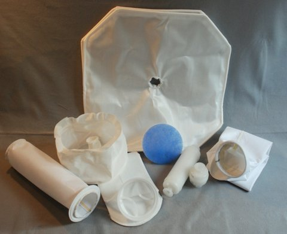

- Customized fabrication of a wide range of industrial filtration and screening materials
- Knowledgable application engineers
- Outstanding service
- Economical prices
Cartridge Filters
- Pharmaceutical Grade units
- Retentions to 0.1 mic liquid
- Retentions to .003 mic air
- membrane and depth style
- Disposable capsules for lab and pilot plant
Fabric Filters for all wet and dry applications:
- Pressure leaf and filter press cloths
- Vacuum drum and belt filters
- Candle Filter elements
- Dust bags and pleated elements
- Strainer bags

Fluid bed Dryer Bags
Franklin Products can provide all sizes, configurations and materials for your pharmaceutical drying, granulating and coating applications. We have a full range of conductive and standard products with retentions down to 3 micron. Bags for Glatt, Niro, Fluid Air, Vector, Alliance and all other units.
Franklin Products provides high quality filter bags to major pharmaceutical companies throught the US, Puerto Rico and Canada. Core Filtration offers on site consultative service for the design of your bags to maximize fit, retention and wear for the optimum service life and value. Let our team improve your fluid bed operations.